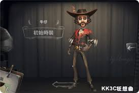
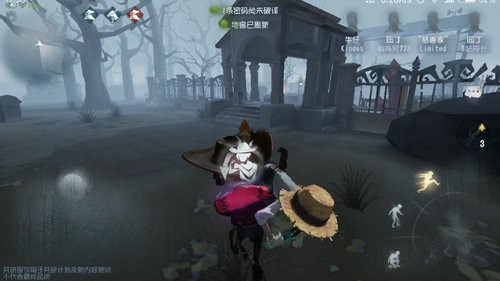

牛仔

【人物介紹】
名字：凱文‧阿尤索
來自美洲大陸的牛仔，年少時曾與一位印第安部落的少女成為摯友，向她習得了令人驚歎的套索技藝。多年後，意外落難的凱文再次為印第安部落所救，熱情爽朗的他很快融入了他們的生活。可惜好景不長，部落衰亡後，他選擇漂流到歐洲大陸。
【能力介紹】
馬背英雄： 馬背上的英雄勇敢強悍，被砸暈的監管者恢復速度減緩20%。
天性散漫：自由散漫，不喜歡操作複雜機械，破譯速度降低10%；但與女性角色共同破譯時，會因表現欲而破譯速度增加10%；與男性角色共同破譯時，破譯速度降低30%。
保護欲：對女性充滿保護欲，背負女性角色時被攻擊命中，會受兩次傷害，隊友不受傷害；背負男性角色時被攻擊命中，則各承受一次傷害。
套索技藝：擅用長鞭套索，點擊或長按可向指定方向揮出，套中隊友能將其拉回背上；若套中監管者會被拉向監管者；可套中氣球及狂歡之椅上的隊友將其救下；套索消耗由命中物體決定，命中狂歡之椅及氣球上的隊友時會大量消耗，其他情況少量消耗。
